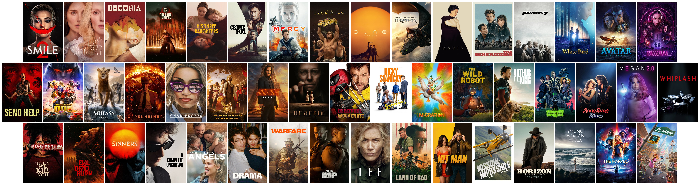
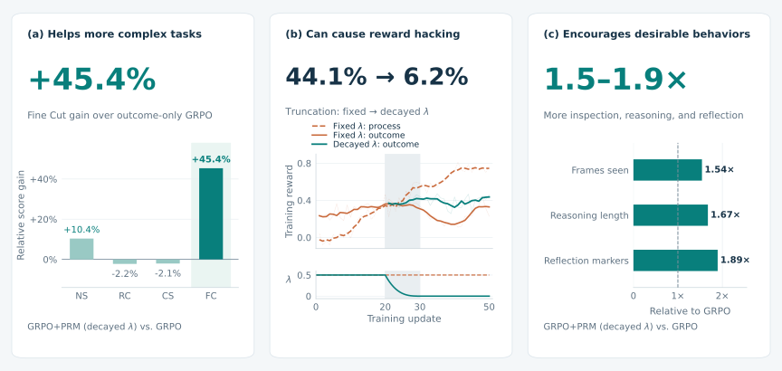
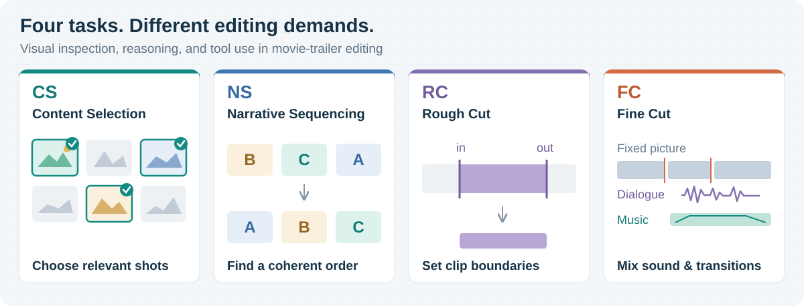

It helps more complex tasks.
Decaying process rewards improves Fine Cut by 45.4% relative to outcome-only GRPO. On the three other task types, GRPO remains competitive.
When Fine-Grained Credit Assignment Helps and Hurts
Multimodal Agentic Reinforcement Learning through Video Editing
Part of this work was completed while Lei Zhao was an intern at Philo Labs.
Fine Cut · dialogue, music, and audiovisual transitions
Teaching AI to edit video with 49 real films. Explore selected outputs from our editing agents, then compare the original untrained and RL-trained edits below. Previews are muted; use the comparison player to listen.
Dialogue, music, and the cut between them.
Turn sound on to hear the difference.
Compare the spoken line and the music entry before the storm shot. Both recorded judges favor the trained dialogue and music.
Selected individual rollouts on the same task and evaluation repetition. Scores are not task averages. Notes summarize recorded grader assessments; examples can retain editing defects. Videos are the original 854 × 480 evaluation renders, with their full picture and audio preserved.

Film and poster credits ↗We compare trajectory-level rewards,
turn-level feedback, and token-level distillation.
Decaying process rewards improves Fine Cut by 45.4% relative to outcome-only GRPO. On the three other task types, GRPO remains competitive.
A fixed process weight eventually encourages redundant actions while completion suffers. Decay lowers truncation from 44.1% to 6.2%.
With decayed process rewards, more visual inspection, longer reasoning, and more self-correction markers accompany the best overall score in our 9B comparison.

Denser supervision is not sufficient: on-policy self-distillation yields limited or unstable gains and is sensitive to the privileged information given to the teacher.
A scalable task-generation pipeline grounded
in real movie-trailer editing workflows.
Inspect candidate shots and select the footage that belongs in a trailer segment. The agent must connect a written brief to visual evidence.
Output: a selection of shots
No films are shared between splits.
The pipeline builds tasks from your own media; the dataset is not distributed.
Bring your movie and trailer. Generate, review, then train.
Task-generation walkthroughMultimodal agentic RL with SkyRL,
vLLM, and an OpenCode agent harness.
One final task reward, shared across the trajectory.
LLM-judged process rewards alongside the task outcome, with optional process-weight decay.
A frozen teacher receives reference answers or turn suggestions to guide student-generated tokens.
Main experiments: Qwen3.5-9B. Additional GRPO/PRM experiments: Qwen3.6-35B-A3B.
Training setupFull BF16 policy checkpoints,
with processor, tokenizer, and chat template.
GRPO + PRM · decayed process weight
GRPO + PRM · fixed process weight
Scores use 81 held-out tasks. Repetitions evaluate the same checkpoint, not independent training seeds. The 35B result excludes incomplete scoring repetitions; see each model card for its protocol. Model and code access currently require permission.
The task-generation pipeline, training implementations,
and outcome graders live in the companion repository.
@software{zhao2026videoediting,
title = {When Fine-Grained Credit Assignment
Helps and Hurts: Multimodal Agentic
Reinforcement Learning through Video Editing},
author = {Zhao, Lei and Cao, Zongheng and Hu, Xinyu},
year = {2026},
url = {https://github.com/leizhao7/video-editing-credit-assignment}
}